第1课时｜45分钟
女装设计 III · 第02周
第02周｜平面·立体·细节造型
图纸提出结构，立体与细节证明它能成立。 把审美判断翻译成前后平面图、身体空间和可制作细节。
完整造型 → 技术平面图 → 结构局部 → 立体快速验证
任课教师：李允耕 博士 / Dr. Lee
第02周结构观察系列 同一系列 5套造型
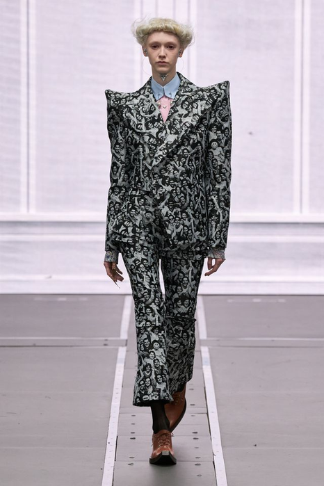
01 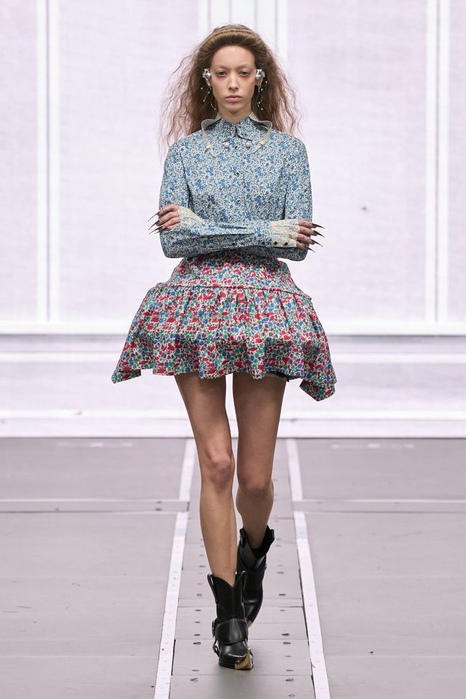
02 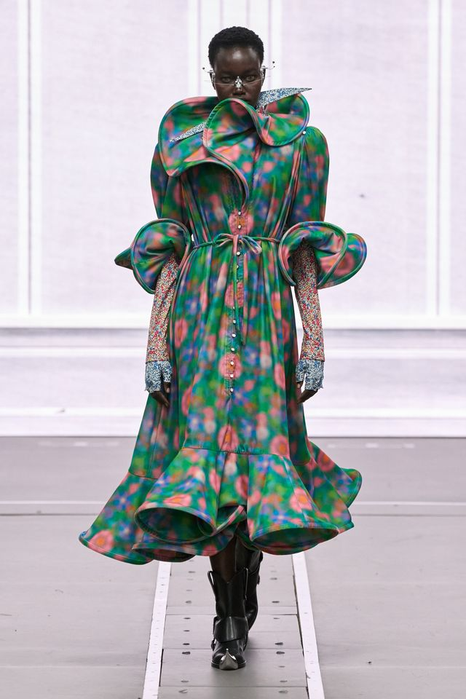
03 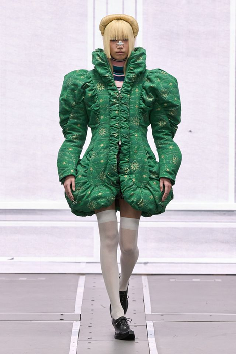
04 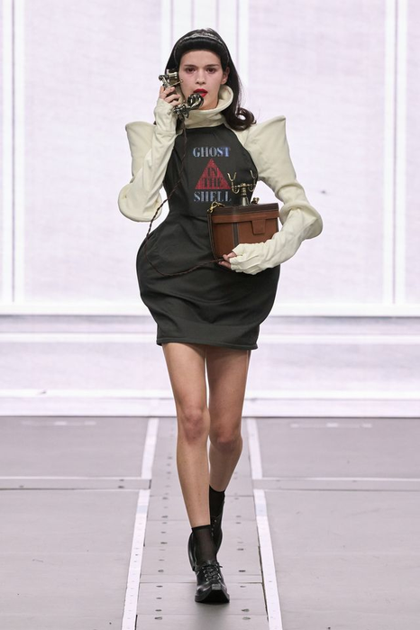
05 图源：课程 2026–2027 秀场资料库｜用途：本页仅作本周结构观察封面，具体系列信息见本周各案例页与补充资料
十六周课程路径 女装设计 III · 第02周｜第1课时 45分钟
十六周不是孤立主题，而是一条连续的设计证据链 前8周建立方法并完成中期验证；后8周深化春夏与秋冬系列，最终独立完成主题系列与答辩。本周输出：前后技术平面图、关键局部与快速立体验证。
01–04 判断与定位
05–08 提取与验证
09–12 季节系列开发
13–16 独立项目与考核
课后查阅｜教学补充
女装设计 III · 第02周
03 补充｜十六周总图
八周技术链属于十六周课程的第二层结构 前八周建立判断、造型、主题、元素与第二阶段检查；后八周继续完成季节系列、独立项目、作品集与答辩。
01–04
判断与定位 美学与历史、平面／立体造型、穿着者研究、主题板与设计任务书。
05–08
提取与验证 元素提取、受控变形、春夏系列策划、白坯样衣与第二阶段检查。
09–12
季节系列开发 春夏系列再编辑、秋冬概念、样衣开发与产品结构编辑。
13–16
独立项目与考核 自定主题、平面／立体实验、作品集整理与最终答辩。
当前周输出 前后技术平面图、关键局部与快速立体验证
第1课时｜45分钟
女装设计 III · 第02周
04 学习目标
本周结束时，你应该能做到这四件事 四条都会在本周的微练、课堂实操与证据页中被直接检验；三者必须描述同一件衣服。
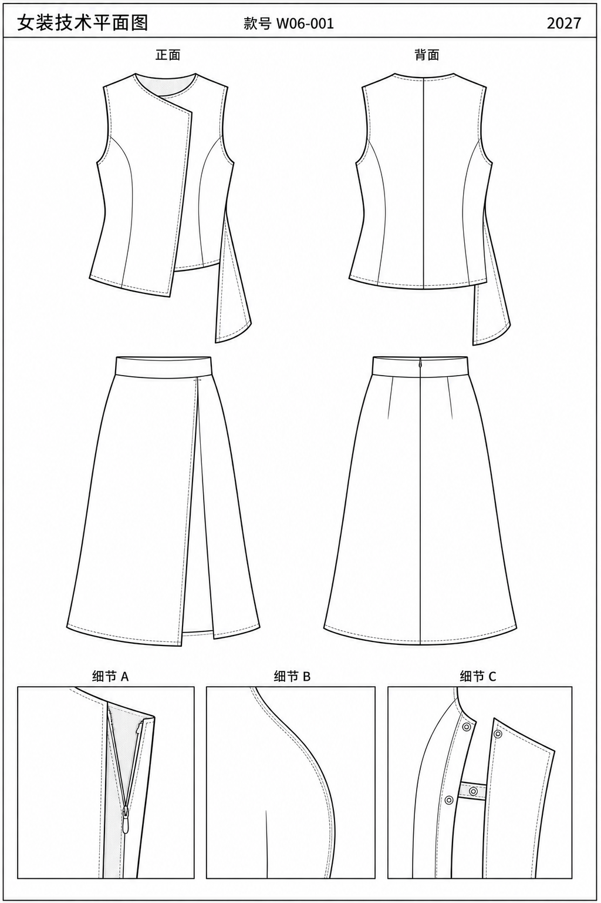
前后平面图：结构信息 平面｜识别 面对一套未见过的造型，能在 5 分钟内画出前后技术平面图草图，并至少标出六类信息中的四类。
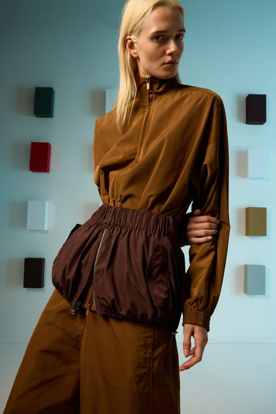
身体空间：支撑与重力 立体｜操作 能在原型上完成一次省道转移或切开展开，说明操作前后省道角度不变 ，并指出展开量落在哪一段轮廓上。
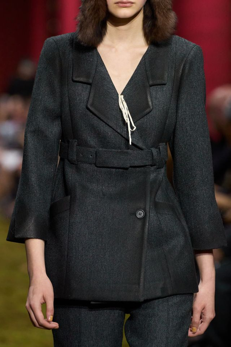
局部：结构／功能／连接／识别 细节｜转译 区分结构／功能／连接／识别四类责任（装饰是识别细节的一种表现，不是独立类别）；能把原理卡 B 栏的“体积来自______”改画成一条具体结构线。
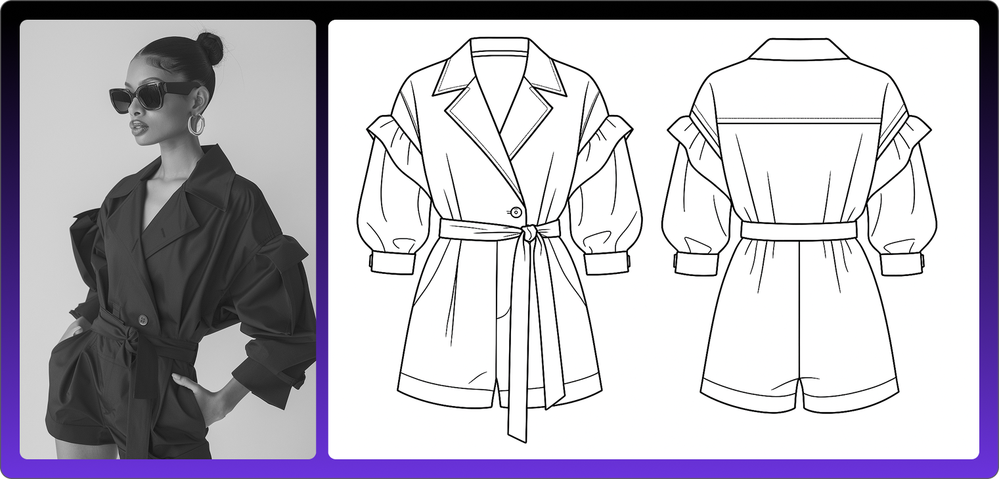
同一服装：模特图 ↔ 前后平面图｜StyleAI 对应｜验证 能用纸或白坯布做一次快速立体，拍照标出与平面图不一致的至少两处 ，并写出下一步修改动作。
学情 大二，已修《女装设计 I/II》《服装结构设计基础》，具备原型、省道转移与基础立裁经验；第01周已交 A3 原理板。三个普遍困难：画平面图时线条数量失控、前后视图不等比；把“细节”当装饰画；做完立体不回改纸样。重点 把原理卡 B 栏的“体积来源”翻译成平面图上可指认的结构线。 难点 平面—立体—细节必须描述同一件衣服；出现断点时能定位是哪一环失效，而不是加装饰掩盖。
图源：课程 2026–2027 技术平面图示例库｜用途：仅用于课堂“同一服装的模特图 ↔ 前后平面图”对照
第1课时｜45分钟
女装设计 III · 第02周
第01周→本周
原理卡不是上周的作业，是本周的图纸底稿 上周你交的 A3 原理板五栏，本周只调用其中两栏；另外三栏保留结论，不重画。
B 形式原理 → 前后平面图 上周写的“这个形状由什么造成？省道／褶量／支撑／材料”，本周要把那一句“体积来自______ ”画成前后技术平面图上的一条具体结构线 。
D 当代转译＋A-0 → 快速立体样 用纸或白坯布把 D 栏的转译做一次快速立体验证 。A-0 人工基线草图仍是前提，本周的 A-0 就是你的第一版平面图。
A／C／E 本周不重做 视觉证据、时代／文化问题、风险与验证三栏保留上周结论 。本周不重新论证，只在证据页里引用它们。
四问在本周变成什么 “身体”→ 身体距离与松量；“结构”→ 结构线与省／褶／支撑的来源；“文化”“时代”本周不新增。
本周补上第五问 “做得出来吗？”——每条线要能指出纸样片、缝合路径与穿脱路径。答不出，这条线就还只是画上去的。 立场句升级 上周写“我选择______的身体关系”；本周在同一句后面接“——我用______这条结构线实现它，用______验证”。
开场 3 分钟 匿名读 3 份第01周一句话小结并当场点评 → 确认 A3（W01_学号_姓名.pdf）已交课程群、纸质稿在桌上 → 确认今天要用的材料：白纸／描图纸／黑色笔／白坯布或替代布。 本周的分界 技术平面图站在“提出主张”与“提供证明”两边的中间——它用主张的语言写，但必须经得起证明的检验。
课后查阅｜教学补充
女装设计 III · 第02周
05 图的职责
效果图、技术平面图、纸样和白坯样衣回答不同问题 不要让一张图承担所有信息。
表达意图 效果图：比例、姿态、氛围 技术平面图：前后结构与细节 局部放大：工艺和连接 检验： 效果图能不能让人一眼看出比例和姿态？看不出，它就只是一张装饰画。
验证可行 纸样：二维尺寸与形状 白坯样衣：三维空间和动作 试穿照片：问题与修改证据 检验： 纸样和白坯样衣说的是同一件衣服吗？对不上，先停下来改纸样。
为什么要分开 一张图承担两件事，两件都会做不好。评审时先问一句“这张图回答哪个问题 ”——答不出的图不要放进板面。 本周对照 你的四类图里，哪一类还完全没有？那就是你现在最大的缺口。
第1课时｜45分钟
女装设计 III · 第02周
06 平面基础
专业技术平面图至少包含六类信息 线条要少而准确，前后视图尺度一致。
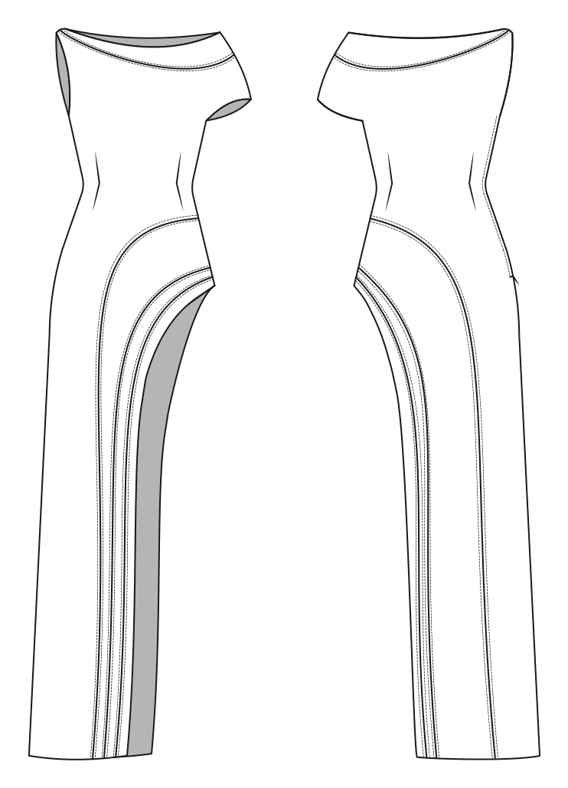
非对称轮廓与体量比例 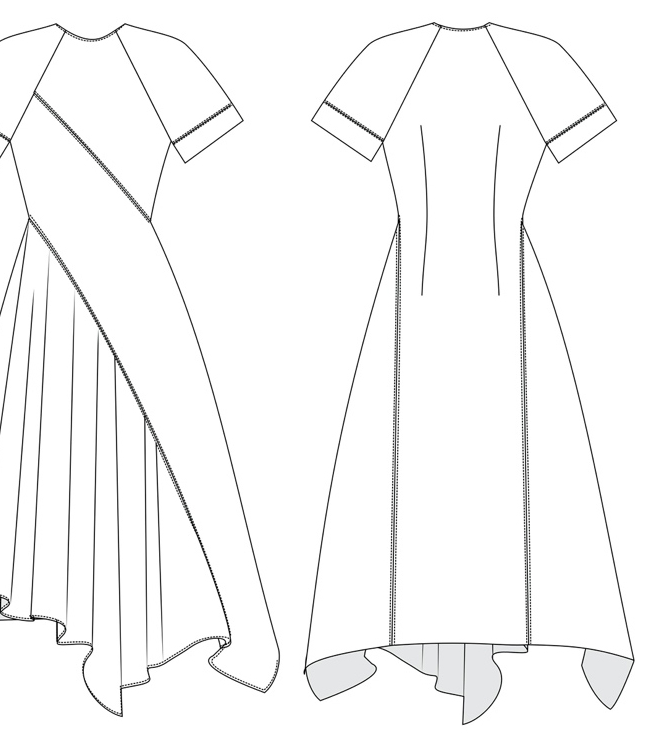
不对称分割、省道与侧缝 结构线 省道、分割、育克（过肩 / yoke）、侧缝。
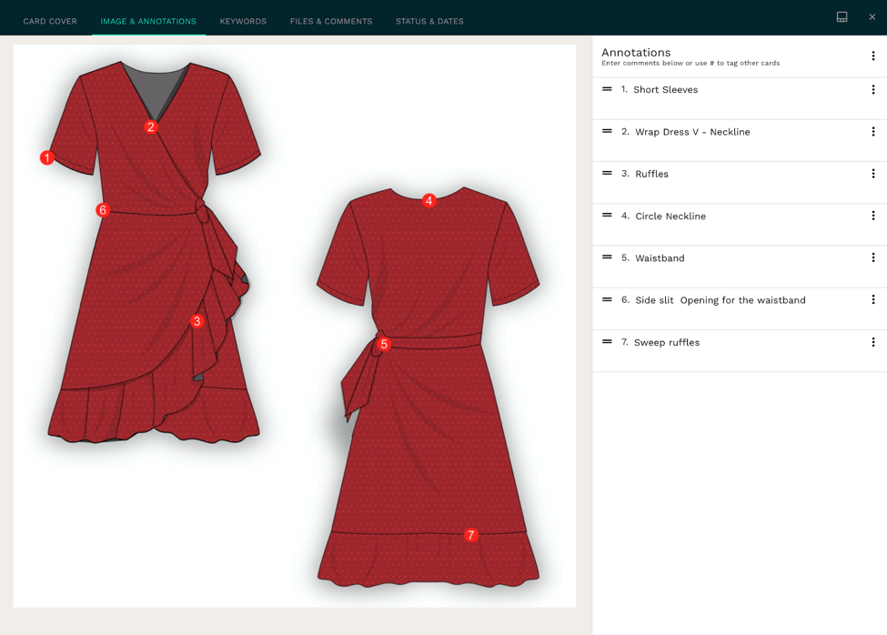
裹身系带与穿脱路径 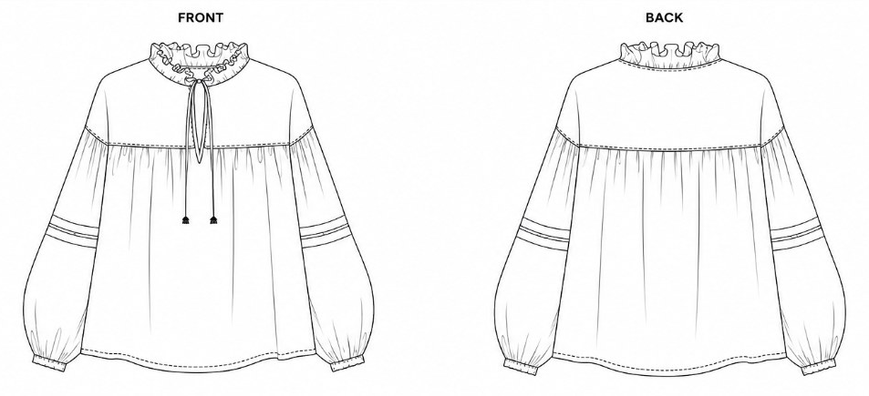
褶饰领口、袖口与下摆收边 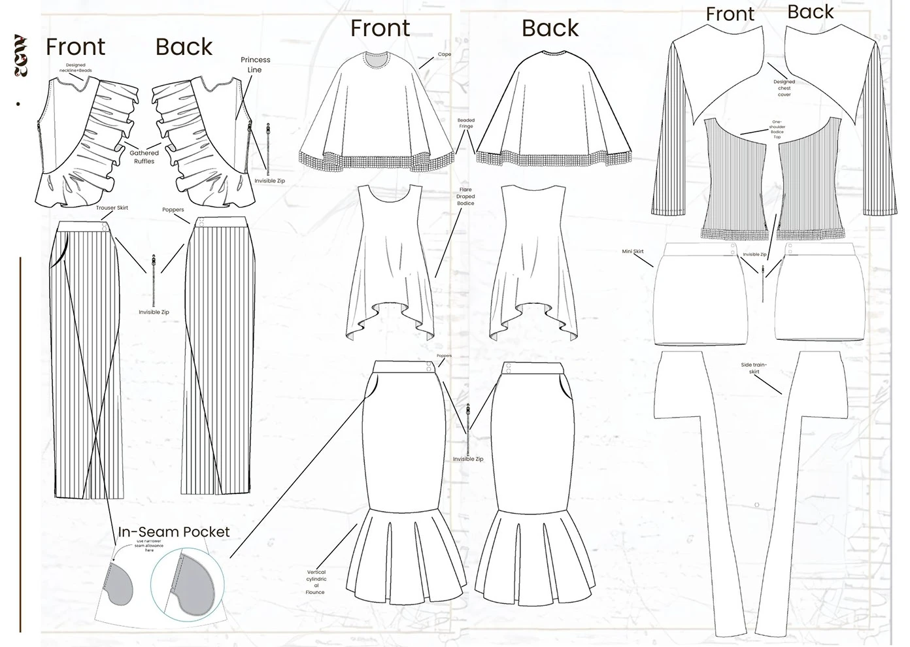
褶量、拼接与口袋局部 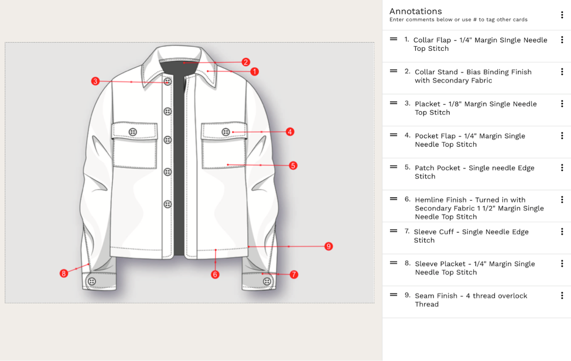
箭头编号与文字说明 课堂约束 课堂限制——每套先只画 8–12 条主结构线 （不含缝迹线、边缘处理与标注）。这个数字是为了逼你排序，不是专业技术平面图的标准；六类信息在正式提交时一项都不能少。
图源：Grace Duffy Design、Grasser、THELYSH Atelier、Rithika Chinni／Behance、Techpacker｜用途：仅用于技术平面图信息层级识别
第1课时｜45分钟
女装设计 III · 第02周
07 细节分类
先判断细节承担什么任务 同一个视觉细节可能同时影响结构、功能和识别度。纯装饰若不承担识别，通常是可以删掉的线。
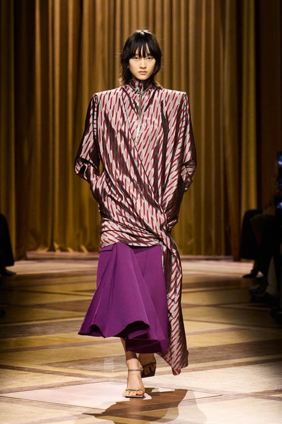
Mugler · 2026秋冬｜分割与褶裥 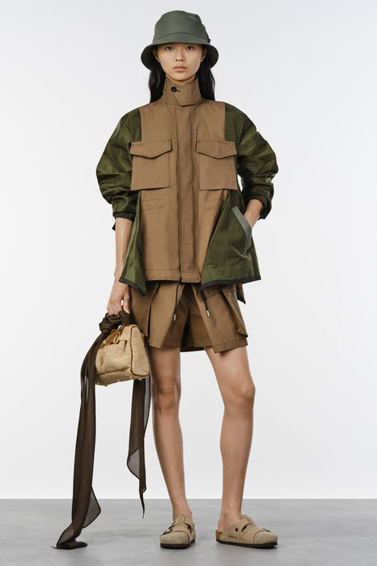
Sacai｜口袋与调节 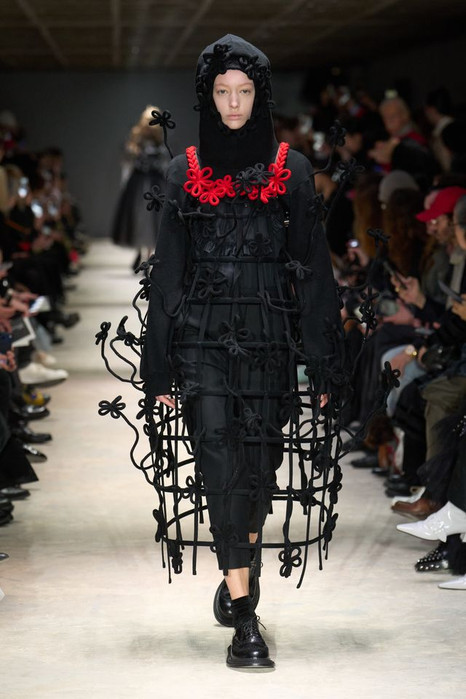
Noir Kei Ninomiya · 2026秋冬｜连接与组装 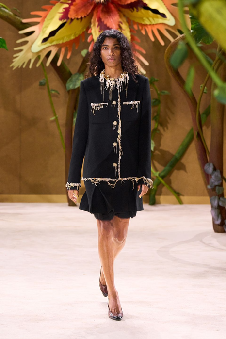
Chanel · 2026秋冬高定｜边饰与识别 图源：课程图像库｜Mugler 2026秋冬、Noir Kei Ninomiya 2026秋冬、Chanel 2026秋冬高定；Sacai 一季的场次与季次待开课前核验，暂不署季｜用途：仅用于课堂细节责任分类观察
第1课时｜45分钟
女装设计 III · 第02周
08 AI协同｜结构诊断
本周把 A-3 从“语言诊断”升级为“结构诊断” AI 可以提出结构问题，但不能替代技术平面图。A-0 仍是前提——没有 A-0 的 AI 输出不计分。
01
A-0 人工基线 先自己画完前后平面图草稿并注明完成时间，再打开任何 AI。本周的 A-0 就是你的第一版平面图。
02
A-1／A-2 可用 让 AI 列出你可能遗漏的后片疑问、比对专业术语、生成结构检查清单；把人工版与 AI 版并列。
03
A-3 结构诊断四问 袖窿连接 ／门襟中断 ／前后线不连续 ／材料支撑不足 ——四问都要在平面图上指出位置。
04
A-4／A-5 禁止与留痕 技术平面图必须手工完成，禁止提交 AI 生成的平面图、虚构后片结构、忽略开合工艺。效果图与质感试案可以用 AI，但要连 A-0、工具名和提示词一起交。每次修改写清改了哪条线、为什么改、下一步怎么验证。
课后查阅｜教学补充
女装设计 III · 第02周
09 案例 A
Issey Miyake 2026秋冬：从完整造型读取平面结构 先看外轮廓，再找分割、开合与面料边界；不要从装饰开始。
Issey Miyake · 2026秋冬成衣｜五个结构观察样本 5套并列观察
01 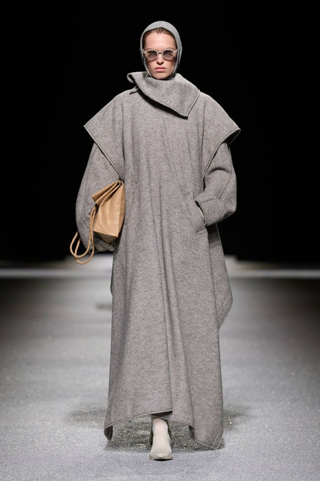
02 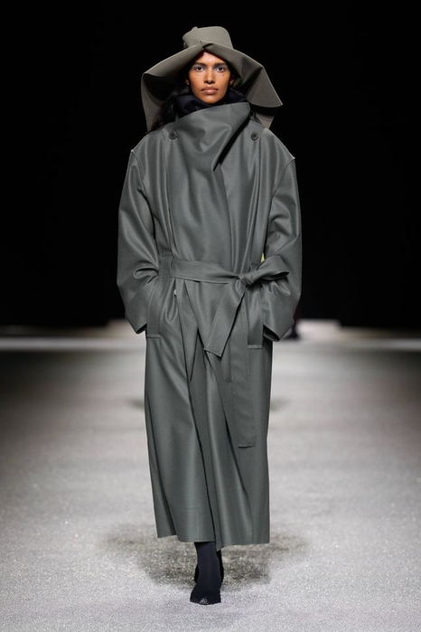
03 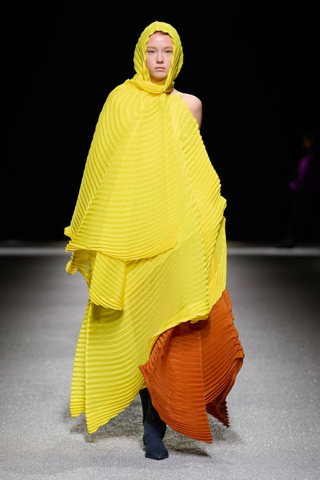
04 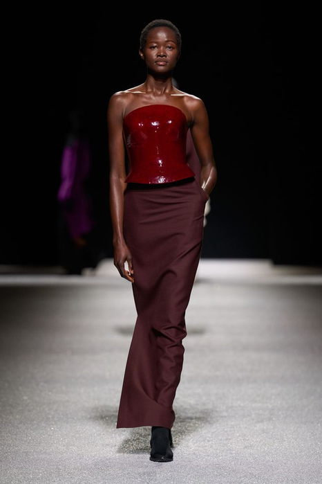
05 课堂限制——每套先只画 8–12 条主结构线 （不含缝迹线、边缘处理与标注）。这个数字是为了逼你排序，不是专业技术平面图的标准；六类信息在正式提交时一项都不能少。
比较：哪些线是视觉线，哪些线必须进入纸样？
图源：Issey Miyake 2026秋冬成衣｜Vogue Runway｜用途：仅用于课堂结构观察
第1课时｜45分钟
女装设计 III · 第02周
10 技术示范
专业平面图必须表现前后关系与局部工艺 右侧技术包用于观察信息层级，不要求照抄款式。
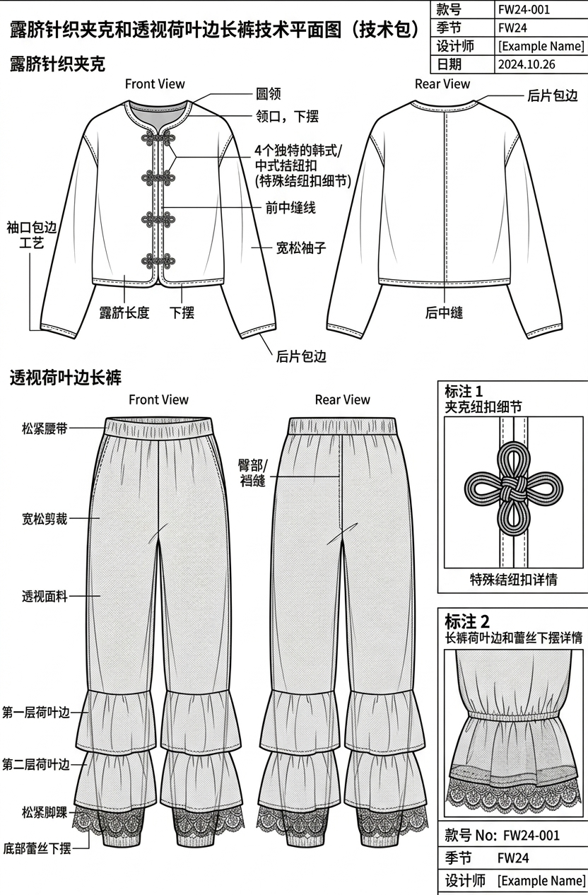
前后视图、局部放大与规范标注（模板示意：表头字段为占位示例，不代表本课程季次） 轮廓线最重，内部结构线次之，缝线与明线最轻。
标注只写制作需要的信息，不写情绪形容词。
前后视图必须等比例，同一件衣服只用一套比例尺。
局部放大要编号，并与主图上的位置一一对应。
图源：课程自制示意技术包｜用途：仅作“专业技术平面图信息层级”参照件
第1课时｜45分钟
女装设计 III · 第02周
11 细节分析
结构细节分析：从可见证据到制作假设 像结构分析师一样追踪因果：先记录看得见的关系，再区分责任、假设与待验证证据。
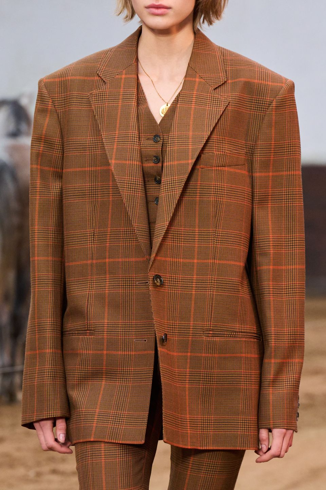
Stella McCartney · 2023秋冬成衣 · 造型 03｜外部观察样本 可见 肩部轮廓／袖窿位置 可记录宽肩比例、肩点和袖窿位置；不能由正面照确认垫肩或内部支撑。
部分可见 前中叠门与纽扣 可见前中开合、纽扣数量与排列；内侧扣位和门襟结构仍需技术平面图或实物证明。
待验证 口袋构造 只能确认袋口的位置与方向；远景照片不足以断言袋型、内部结构和制作成本。
01 看见什么 记录部位、位置、方向、比例、数量和重复关系。
02 承担什么责任 判断主要与次要责任：结构、功能、连接或识别。
03 提出制作假设 推测纸样片、缝合路径、开合和边缘处理，但写明“假设”。
04 补什么证据 寻找后视图、局部近照、技术平面图或白坯样衣进行核对。
课堂规则 可见事实用实线；制作推测用虚线；无法确认处必须写“待验证”。
图源：Stella McCartney 2023秋冬成衣 造型 03｜Vogue Runway｜用途：本页为跨季对照，选用该季因该套正面结构信息最完整；仅用于外部结构观察，不推断成本
课后查阅｜教学补充
女装设计 III · 第02周
12 构造词汇
二维图与构造词汇必须共同指向同一件衣服 教材图像用于校正专业术语和结构观察，不替代自己的平面图与白坯样衣。这六个词是“六类信息”里“结构线”一格的展开——不是另一套清单。
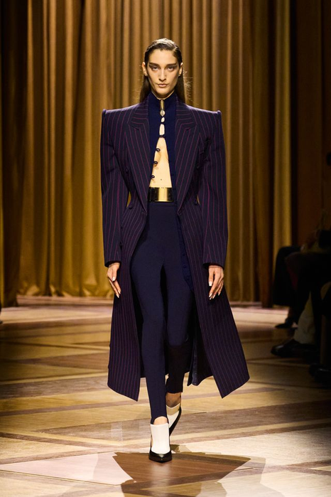
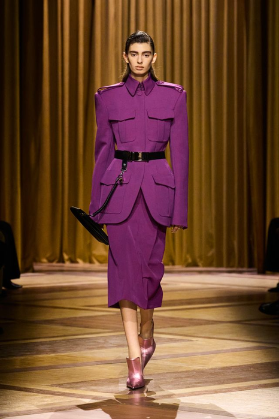
01 Mugler · 2026秋冬｜同一系列的轮廓变化 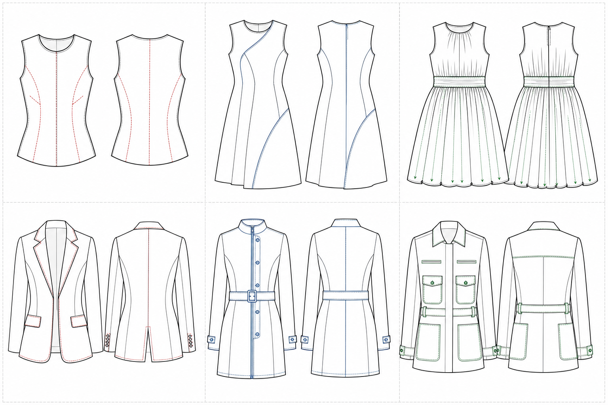
01 省道 02 分割线 03 褶量 04 开口 05 闭合 06 口袋
02 构造词汇｜结构线的六种写法 先指出外轮廓与身体距离，再进入省道、褶、缝、开口和闭合。
技术平面图要让版师理解结构，效果图要让评审理解造型。
观察任务：图中的线是否都能在三维衣服上找到责任？
图源：课程图像库（Mugler 2026秋冬）；构造词汇图为规范标注的专业技术平面图示意｜用途：仅用于课堂术语校正与结构观察
课后查阅｜教学补充
女装设计 III · 第02周
13 立体词汇｜原型法
原型法：从基础纸样到样衣验证 为便于课堂观察，将原型法工作流程概括为“基础纸样—结构变换—样衣验证与修正”。
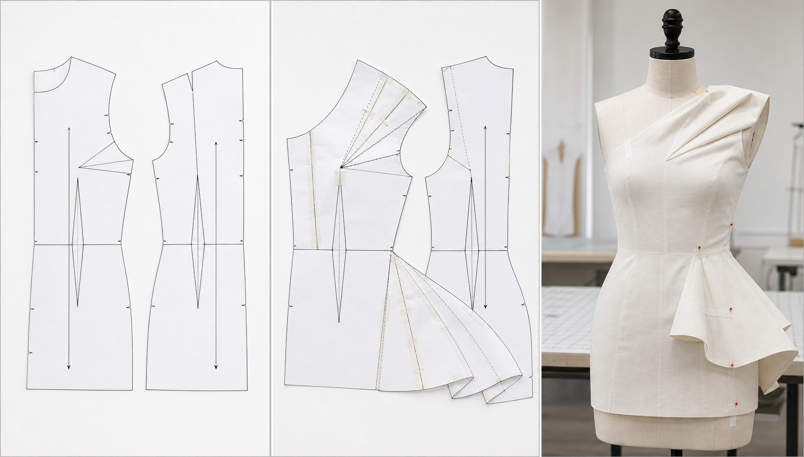
教学示意｜同一对象的纸样—变换—样衣证据链 01 基础纸样／原型 先确认人体基准、省量、松量与平衡线（前后衣片的水平基准）。
02 结构变换 以省道转移、切开展开与追加量建立明确体积。
03 样衣验证与修正 用白坯布检查贴合、平衡、活动量，再回改纸样。
方法依据：浙江理工大学《服装结构设计基础》、东华大学《服装结构及样板设计》｜图源：本课程绘制的教学示意，不代表某位设计师公开流程
课后查阅｜教学补充
女装设计 III · 第02周
14 场景条件｜设计任务
南昌九月开学季：一件轻外套如何同时应付室外湿热、教室空调与工作室久坐？ 把气候、动作与场景转成技术平面图、材料和细节条件。
01
身体 久坐画图、伏案、抬臂取料、背画袋。
02
环境 南昌九月室外湿热、工作室与教室强空调温差、电动车与地铁通勤。
03
结构 可调开合、轻量叠穿、能装 A3 与工具的口袋、肩部活动量。
04
验证 前后技术平面图 ＋ 关键局部 ＋ 纸或白坯布快速立体测试。
交棒 本周只把场景转成结构条件；“这件衣服是谁的”留到第03周回答。
第1课时｜45分钟
女装设计 III · 第02周
16 教师演示
从一张完整造型到“前—后—局部—立体”四步证据 演示不是临摹外观，而是逐步暴露未知信息。
01
观察 圈出外轮廓、结构线、开合方式与受力位置。
02
承诺 绘制前后技术平面图，并标出仍不确定的部分。
03
放大 选择一个关键局部，说明制作工艺与身体动作。
04
验证 用纸张或白坯布测试体积、固定点与身体距离。
演示要求 每一步都留下可见证据，并写出下一步决定。 演示留痕 四步全程投影或实物展台，第 02 步（前后平面图）完成稿留在展台上不擦，学生微练全程可对照。
第1课时｜45分钟
女装设计 III · 第02周
16 1课时微练
8分钟：把原理卡 B 栏变成一张结构线清单 不画完整平面图，只回答“上周写的那个体积，是哪几条线做出来的”。
02分钟
从上周 A3 挑一套，抄下 B 栏的“体积来自______” 调用原理卡
03分钟
在打印图上圈出承担这个体积的 3–5 条线，编号 结构线定位
02分钟
每条线标一个责任字母：结构 S／功能 F／连接 C／识别 I 责任判定
01分钟
圈出一处“看不见、必须验证”的地方，写“待验证” 证据缺口
输出：一张编号结构线清单，下午实操时直接照它画平面图。
第2课时｜45分钟
女装设计 III · 第02周
第2课时｜45分钟
从画清楚进入做清楚 第二课时：体积、材料与细节必须在身体上共同成立。
第2课时｜45分钟
女装设计 III · 第02周
18 身体空间｜当代案例
四种身体距离，需要用造型实例同时比较 先观察服装与肩、腰、臀之间的空气，再判断纸样余量、支撑方式与重力方向。这四类是上周“贴合／离体”两轴的细分——中间多了一档“顺体”，并把“垂坠”单独立为一类；写作业时四个新词与上周十二词表通用（对照表见补充资料）。
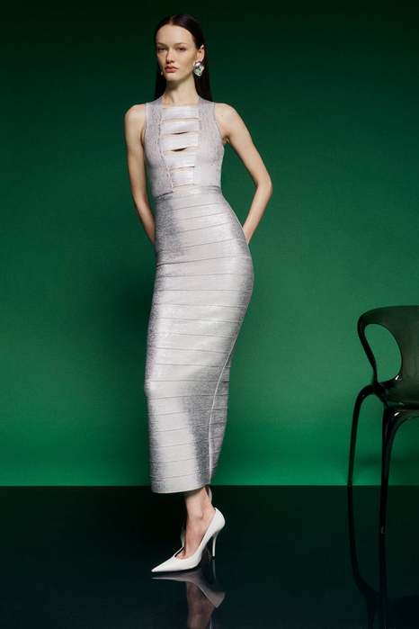
Hervé Léger · 2026秋冬成衣 贴体｜近零距离 ＝上周“贴合”。弹性与省量沿身体曲面分配，服装持续贴近肩、腰、臀。
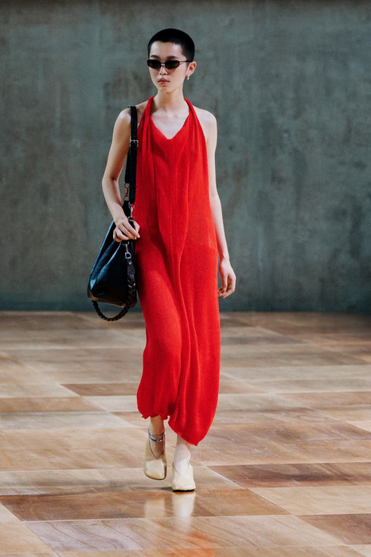
Lemaire｜顺体观察样本 顺体｜少量空气 本周新增的中间档。轮廓跟随身体方向，但在胸、腰、腿之间保留活动空间。
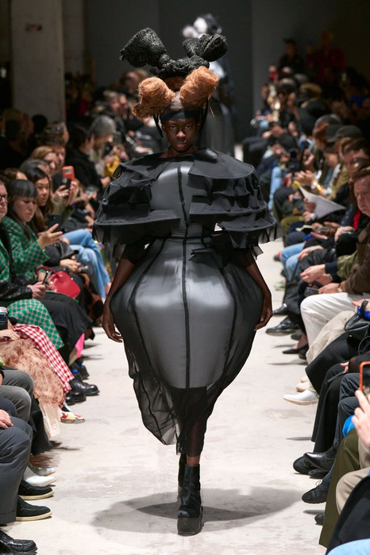
Comme des Garçons · 2026秋冬成衣 离体｜独立体积 ＝上周“离体”，由“支撑”造成。支撑、填充与硬挺材料使服装形成不依附身体曲面的体积。
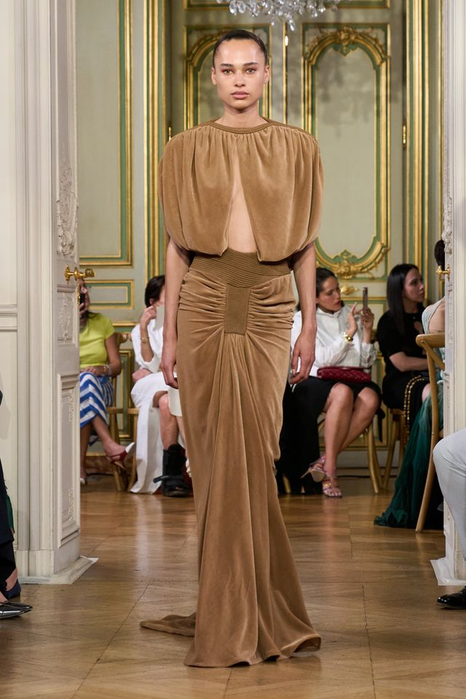
Standing Ground · 2026秋冬（伦敦时装周） 悬垂｜重力下落 ＝上周“垂坠”。材料从肩部和腰部固定点向下垂落，褶线显示重量方向。
图源：课程 2026–2027 秀场资料库（Lemaire 一季的季次待开课前核验，暂不署季）｜用途：分类为课堂视觉判读，仅说明该套造型的身体距离，不代表品牌全部设计。
第2课时｜45分钟
女装设计 III · 第02周
19 造型操作｜五类基础训练
五类基础训练，以“操作前—过程—结果”建立证据 训练类型取自服装院校结构与立裁课程的常见项目（出处见页脚）；图示为本课程绘制的教学示意，不是所引院校的原始课件图 ；真实教学现场照片见补充资料“本土教学现场”页。
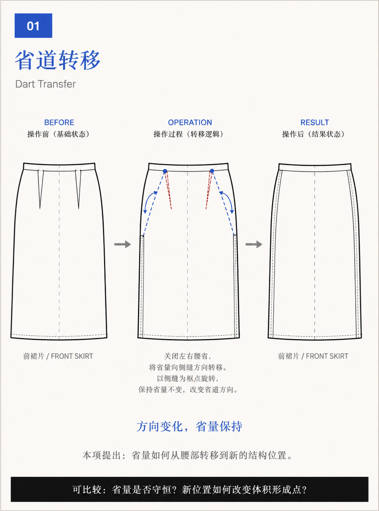
教学示意 · 省道转移 省道转移｜剪开／旋转 课堂操作： 以省尖所指的圆心为旋转中心（本页示意为裙前片 ，枢轴在侧缝；上衣则以 BP 胸高点 / Bust Point 为圆心），闭合原省并打开新省。提交证据： 原型、操作线、结果纸样，以及省道角度不变的验证 （绕同一圆心旋转，角度守恒。本页示意中两省省尖与枢轴等距，所以省量看起来不变；换到上衣绕 BP 旋转时，线性省量会随省尖到 BP 的距离而改变）。
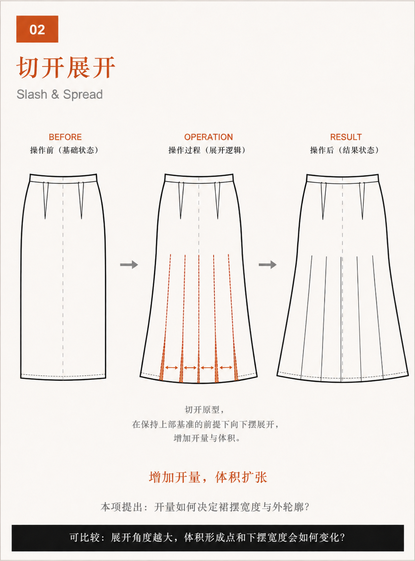
教学示意 · 波浪裙展开 切开展开｜增加下摆 课堂操作： 从下摆切开，保持腰线连接并等距展开。提交证据： 展开角度、间距、新侧缝与下摆线。
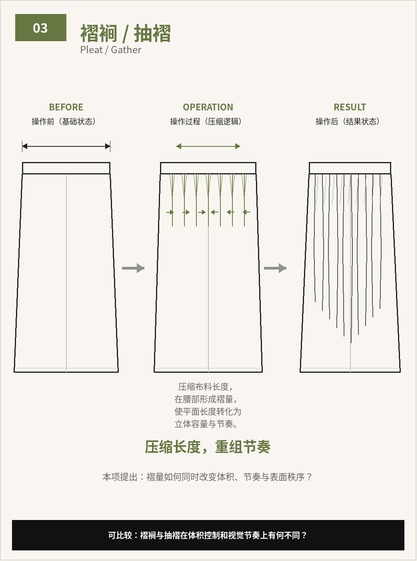
教学示意 · 省—褶—裥互换 褶裥／抽褶｜压缩余量 课堂操作： 压缩标记区，把余量转换为褶裥或抽褶。提交证据： 压缩长度、褶数、褶距与固定线。
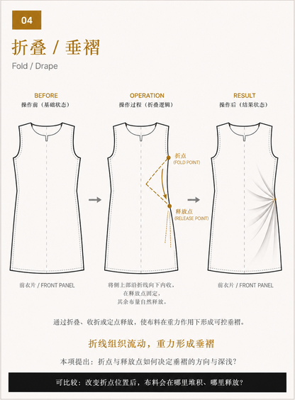
教学示意 · 斜纱与褶皱造型 折叠／垂褶｜释放重力 课堂操作： 设置折点与释放点，让材料沿重力方向形成垂褶。提交证据： 折点、释放量、纱向与样布照片。
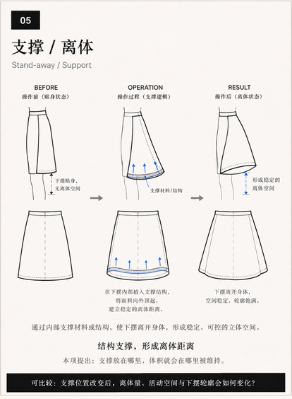
教学示意 · 内衬与支撑 支撑／离体｜建立空间 课堂操作： 在下摆加入支撑或内衬，使体积离开身体。提交证据： 支撑位置、材料、连接与穿脱路径。
方法依据：湖南师范大学“女上衣原型省道”、惠州学院《服装结构设计》、浙江理工大学《服装立体裁剪》、黑龙江大学《服装立体裁剪Ⅱ》｜图源：本课程绘制的教学示意，非所引院校原始课件图。
课后查阅｜教学补充
女装设计 III · 第02周
本土教学现场
五类基础训练发生在什么地方：北京服装学院两个教学空间 上一页的五类训练图示是本课程绘制的教学示意 。这两张是院校公开发布的真实教学现场照片 ——训练不是纸上的线稿，它有具体的人台、案台、机器和半成品。看照片时对照上一页的五项，想一想：你的操作在哪一张桌子上完成，证据在哪一台机器上产生。
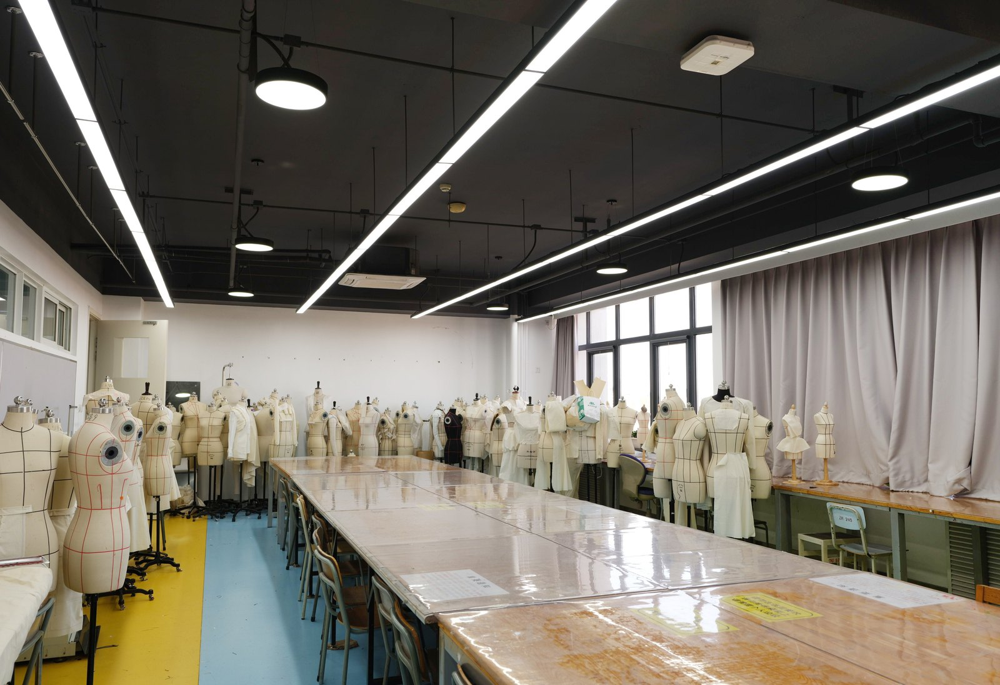
创意造型实验室 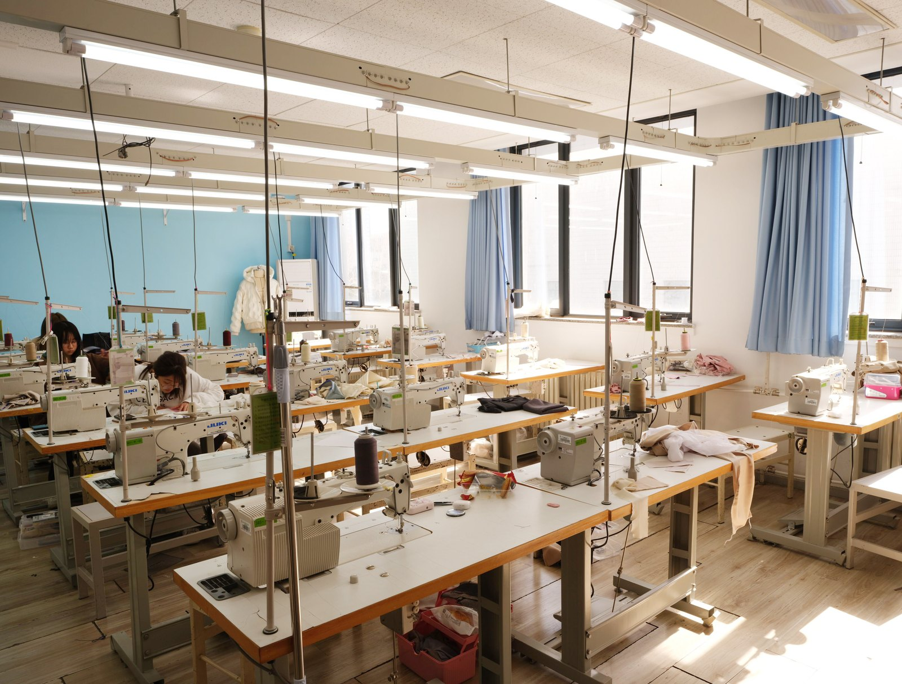
服装结构与工艺教学中心 创意造型实验室 ｜人台上画着人体基准线 （BP、公主线、腰围线）——这就是上一页“以圆心旋转”“保持平衡线”的那个基准。架上的白坯样处在不同阶段：有的还在别针固定，有的已经修过一轮。04 折叠／垂褶 与05 支撑／离体 就在这里做。
服装结构与工艺教学中心 ｜案台出纸样、机器出缝合证据。上一页每一项要求的“结果纸样”“样布照片”“固定线”，都是在这样的桌面上产生的。01 省道转移 、02 切开展开 、03 褶裥／抽褶 的提交证据在这里落地。
课堂用法 ：写“提交证据”那一栏时，先想清楚这条证据由哪一步操作 、在哪一个台面 上产生。写不出来的，多半是操作还没想清楚。
图源：北京服装学院服装艺术与工程学院官方网站“设计实践教学平台”（2024-05 发布，2026-08-28 检索）｜用途：仅用于课堂教学现场观察。著作权归北京服装学院；本页按院校官方报道体例署名引用，与本周“北京服装学院 × 探路者工作营”页采用同一体例。完整来源见 w02_bift_lab_assets/CREDITS.json
第2课时｜45分钟
女装设计 III · 第02周
20 国际秀场对照｜同一操作
同一个当代系列里，五个基础操作同时出现 与上一页逐项对照：院校训练建立方法与证据，秀场作品显示同一方法在产品与审美判断中的结果。
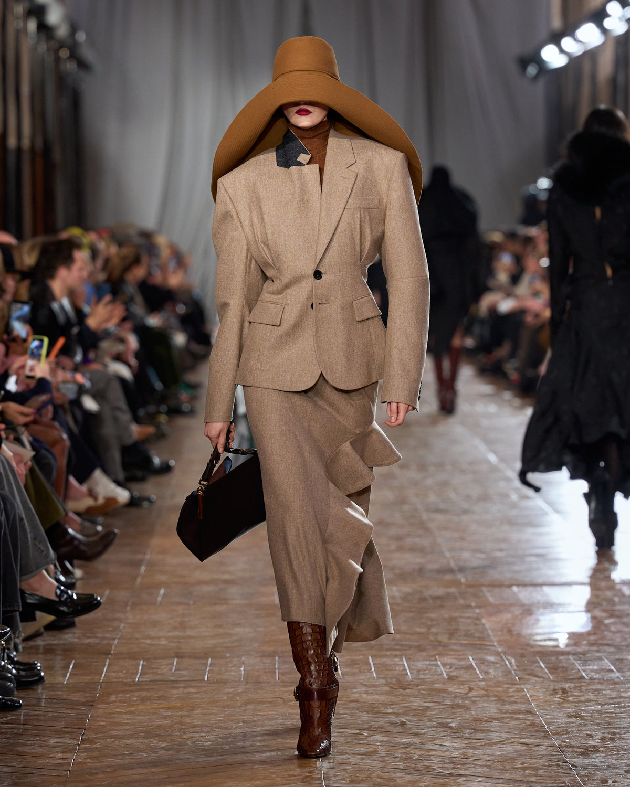
Lanvin 2026秋冬 · 造型 11 省道转移｜合体与收腰 看什么： 胸腰差由省道与结构线承担，腰线是裁出来的，不是勒出来的。对照上页： 课堂练习强调“省道角度不变”；这里表现为肩—胸—腰的连续贴合。
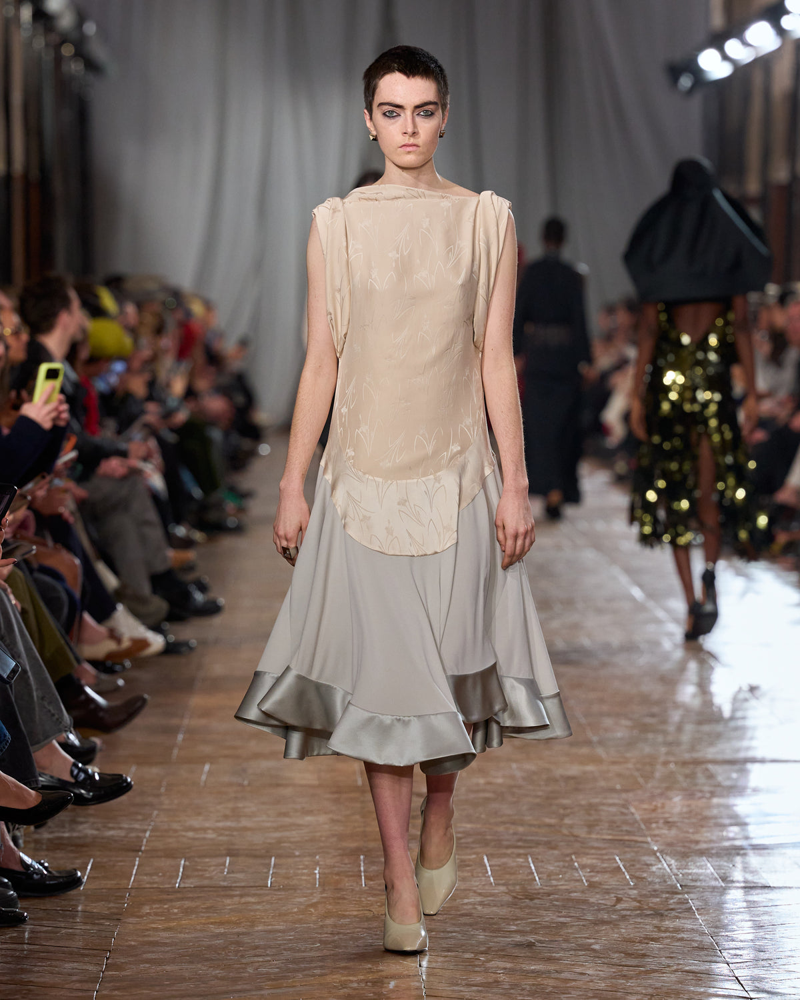
Lanvin 2026秋冬 · 造型 44 切开展开｜下摆扩张 看什么： 腰臀保持贴合，下摆明显变宽，展开量集中在膝盖以下。对照上页： 课堂练习的“等距展开”，在成衣上直接决定行走时的摆量。
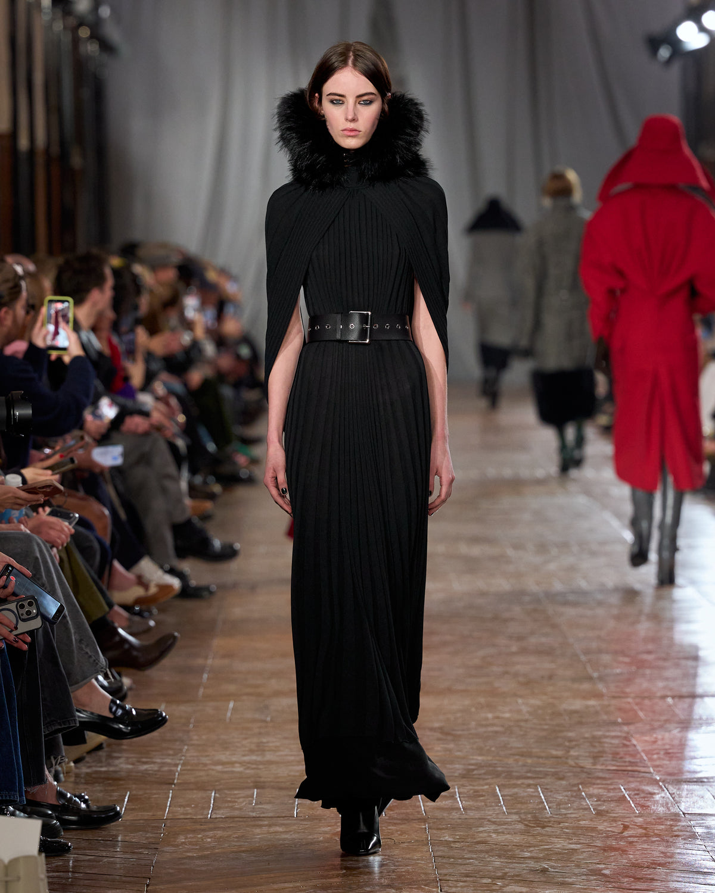
Lanvin 2026秋冬 · 造型 38 褶裥／抽褶｜压缩余量 看什么： 整衣细褶把大量面料压缩到窄小的领口与腰围。对照上页： 课堂练习的压缩长度与褶距，决定这里的褶密度与光影节奏。
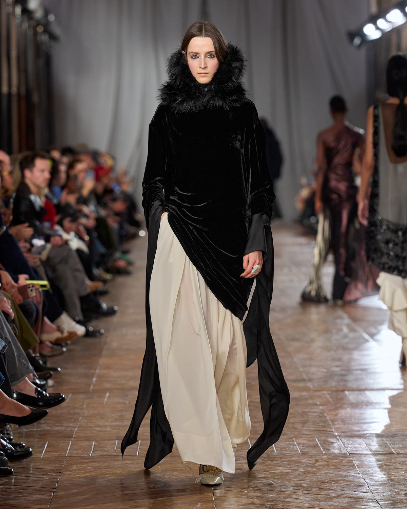
Lanvin 2026秋冬 · 造型 57 折叠／垂褶｜重力释放 看什么： 黑色与米色的分界就是折点，材料从折点向下自由下落。对照上页： 课堂练习设置的折点与释放点，在这里形成可见的两层重量。
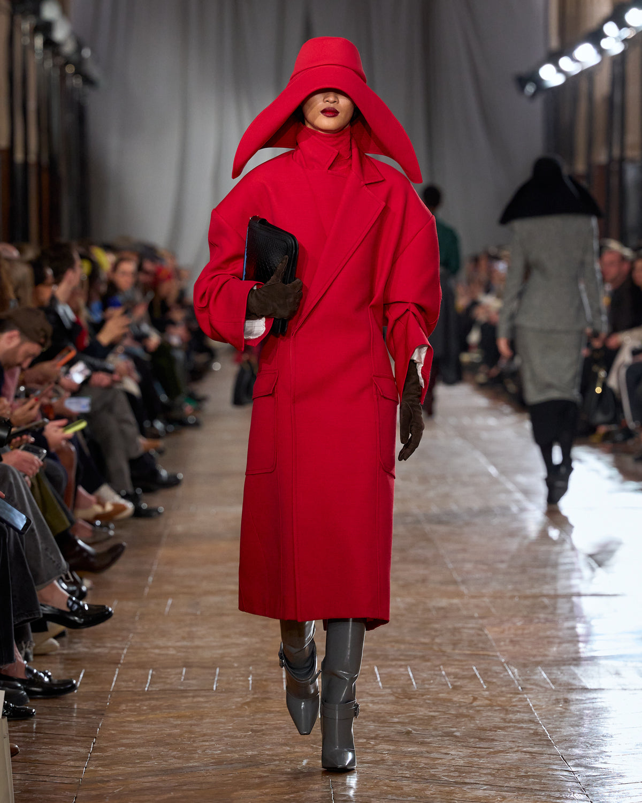
Lanvin 2026秋冬 · 造型 36 支撑／离体｜建立空间 看什么： 外套体积完全离开身体，肩线与领口由内部支撑维持。对照上页： 课堂练习在下摆加支撑或内衬，这里把同一逻辑放大为整件廓形。
图像：Lanvin 2026秋冬成衣（“BONJOUR MINUIT”，Peter Copping，巴黎时装周 2026年3月6日）｜来源：Lanvin 官方发布 us.lanvin.com｜仅用于课堂结构观察，不代表品牌官方版型分析。
课后查阅｜教学补充
女装设计 III · 第02周
21 案例 B
MM6 Maison Margiela：版本变化必须保留可识别结构 比较同一系列中长度、开合、层次与身体距离如何变化。
MM6 · 五个版本比较样本 5套并列观察
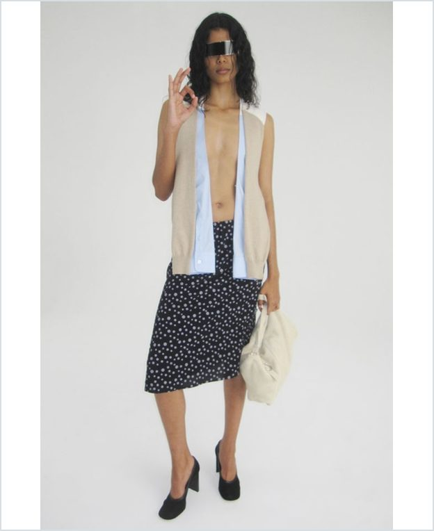
01 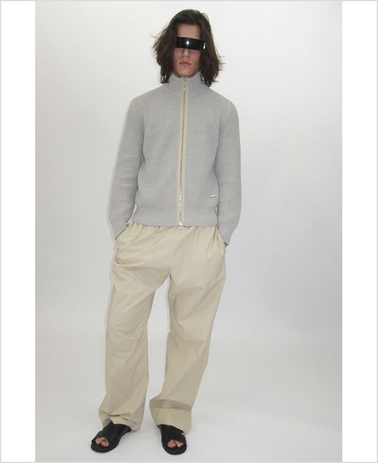
02 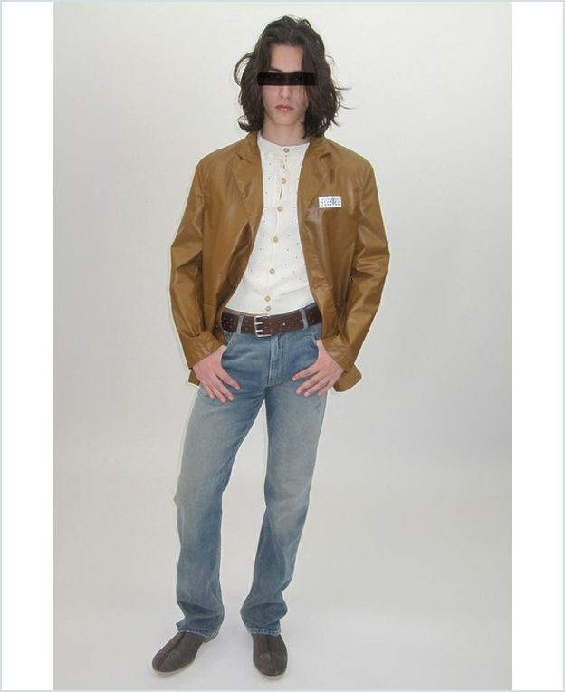
03 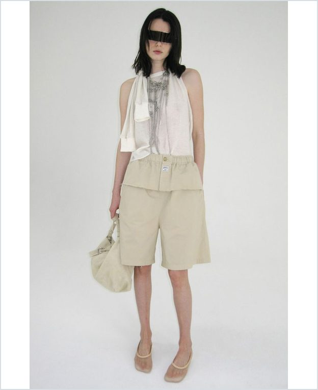
04 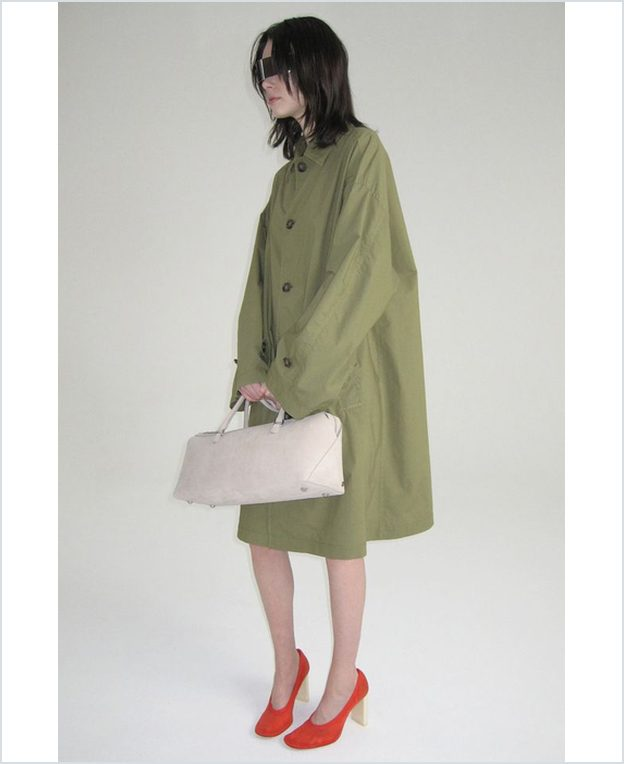
05 变化不是随机换款，而是同一规则的不同强度。
画出每套最关键的三条结构线。
图源：MM6 Maison Margiela（系列与场次见课程图像库）｜Vogue Runway｜用途：仅用于版本比较观察
第2课时｜45分钟
女装设计 III · 第02周
22 材料行为
相同纸样遇到不同材料，会产生不同体积 先预测，再通过小样确认。
挺括 垂坠 弹性·贴体 透明
挺括材料需要处理支撑与边缘厚度。
垂坠材料需要确认纱向 与重量。
弹性和透明会改变身体触点与工艺。
图源：挺括 Comme des Garçons 2026秋冬成衣（与“身体空间”页的“离体｜独立体积”为同一样本，同图两读）；垂坠 Victoria Beckham 2027度假系列；弹性 Alaïa 2026秋冬成衣；透明 Iris van Herpen 2026秋冬高定｜用途：仅用于课堂材料行为观察
第2课时｜45分钟
女装设计 III · 第02周
23 案例 C
Karoline Vitto：从一条结构规则发展多个造型 同一条规则——斜向分割、开口由金属件固定、余量在开口处释放——重复五次，每次只改变位置与强度。
Karoline Vitto · 五个结构转译样本 5套并列观察
01 02 03 04 05
选择一套：画前后平面图，标出金属件的固定点，预测开口处会释放多少余量。
再选择另一套：说出被改变的是分割角度、开口位置、固定点数量，还是释放方向。
图源：Karoline Vitto 秀场公开图｜用途：仅用于“从一条结构规则发展多个造型”的整版观察，不代表品牌官方版型说明
第2课时｜45分钟
女装设计 III · 第02周
24 常见失败诊断｜当代观察
Toga 2026秋冬：复杂造型先诊断，再补证据 “Pull / Crumple / Pressed”与模块化叠穿让结构、装饰和材料行为同时出现；以下不是失败作品，而是诊断练习。
Toga · 2026秋冬 · 01 Toga · 2026秋冬 · 02 Toga · 2026秋冬 · 03 Toga · 2026秋冬 · 04 Toga · 2026秋冬 · 05
01 正面证据不足 仅凭秀场正面照，不能确定后片、开合、领口转折与肩胛活动量；必须补后视平面图。
02 线条责任不明 先区分边缘、叠层、装饰、拼接和真正进入纸样的结构线。
03 材料行为待验证 薄、厚、软、硬材料并置时，支撑、褶量与连接必须用样布验证。
图源：Toga 2026秋冬成衣｜Vogue Runway（设计提示词 Pull / Crumple / Pressed）｜用途：仅用于课堂结构诊断练习，不作失败作品评价
课后查阅｜教学补充
女装设计 III · 第02周
25 常见错误
平面与立体不对应时，先找信息断点 不要靠更多装饰掩盖结构矛盾。
断点 前后视图长度不一致 细节没有穿脱路径 体积在纸样中没有来源 材料不支持预期形态 修正 统一基准线与比例 补开合和连接 标固定点与释放量 做 20cm×20cm 小样测试：悬挂看落感与褶线方向，折压看回弹与折痕，贴身看透与滑；垂坠类另取 20cm×50cm 长条挂起来看 第2课时｜45分钟
女装设计 III · 第02周
27 证据记录｜院校案例
东华大学立裁竞赛示例：一张板面如何建立同一设计的证据链 官方样例把5套效果图、对应正背平面图和白坯多角度照片放在一起；本课程还要求补“关键局部”和“判断记录”。
设计对象 + 5套正背平面图 白坯验证｜正面·侧面·背面 A
已显示
前后技术平面图 5套正背平面图成对排列，比例与视角统一。
B
需补充
关键局部 从选定一套放大连接、缝合、释放或调节方式。
C
已显示
快速立体 白坯按正面、侧面与背面记录体积；正式提交扩展到选定两套。
D
需补充
判断记录 补写 A-0 人工基线 （含完成时间）、A-1 提出的问题与完整提示词 、A-4 人工修正及理由 、A-5 最终设计决定 。四项与第01周 AI 使用记录表同名，不另立名称。
图源：2020“LILY商务时装·东华杯”第十四届中国大学生服装立体裁剪设计大赛 附件3作品汇总图文文件（东华大学）｜用途：作为本节课堂实操的证据板对照示范件
课后查阅｜教学补充
女装设计 III · 第02周
28 证据板｜项目案例
北服 × 探路者工作营：四个区域从设计走向真实穿着 官方报道连续展示图稿、板房与制作、成品拍摄和动态走秀；这些是项目阶段参考，不等于四张照片均属于同一款。
A 成品 成品
完整造型｜成品拍摄 用正面或3/4视角确认比例、层次与功能装备关系。
B 图稿 图稿
平面图｜设计图稿 可见正背关系、色块与可拆背包；正式提交还要转成规范平面图。
C 工艺 工艺
关键细节｜制作现场 用真实缝制、面料处理和制作路径证明局部可实现。
D 动作 动作
立体验证｜动态走秀 观察行走中的松量与装备稳定性；动态照片不能替代白坯修改照。
学生板面规则 四区必须锁定同一套造型。
图源：北京服装学院官方报道（北京服装学院 × 探路者滑雪服设计工作营）｜用途：仅用于课堂项目阶段证据观察
课后查阅｜教学补充
女装设计 III · 第02周
29 期末评价连接
本周成果将进入同一套六项终期评价 平时训练不是零散作业，而是期末系列的证据积累；本页依据《25级〈女装设计〉考核大纲》期末实践考试评分标准（满分100分）。
10分
时代性与创意 主题回应当下，并形成自己的问题与立场。
10分
趋势性与元素 提炼的设计元素与当季趋势、审美和来源一致。
20分
当代女性适配 款式回应身体、动作、场景与真实穿着需求。
20分
整体造型美感 比例、色彩、材料与细节共同形成完整造型。
20分
市场与定位 顾客、价格、品类和使用情境边界清楚。
20分
统一与丰富 风格统一，同时具有角色、搭配与造型变化。
第2课时｜45分钟
女装设计 III · 第02周
30 形成性评价
第02周检查：图、体积和细节是否描述同一件衣服 每项必须能在板面上找到证据。
✓
准确 5分 前后比例和结构线清楚。→ 期末｜整体造型美感 20分
✓
对应 5分 平面线条能在立体中找到。→ 期末｜整体造型美感 20分
✓
可穿 5分 开合、动作和身体触点成立。→ 期末｜当代女性适配 20分
✓
可做 5分 细节与材料具有制作路径。→ 期末｜趋势性与元素 10分
评价记录 用“成立／部分成立／需重做”标记，并写出下一步动作。 本周不评 时代性与创意（第01周已评）、市场与定位、统一与丰富——共 50 分自第03周起逐周累积。
第2课时｜45分钟
女装设计 III · 第02周
26 课堂实操
21分钟：一套造型的二维—三维—细节证据 只做一个核心结构，要求三种表达互相对应。上午微练已产出结构线清单，本节直接照它画，不重画。
课堂条件 无白坯布者用 A4 复印纸或旧衬衫布替代，不影响本周评分；两人一组互拍，手机竖拍正／侧／背三张，课后打印或贴入 A3 右下角。没有立体照片的证据页视为未完成。
输出：同一造型的一页闭环证据，不交三张互不相关的图。
第2课时｜45分钟
女装设计 III · 第02周
31 下周准备
第03周前准备：把“人—场景—时事—问题”做成四份可核查证据 不要提前做漂亮情绪板；先带来能被追问、能被引用、能转成设计条件的原始资料。
01｜1人
穿着者 选择一位真实或可接触的对象，可匿名，但不能用抽象“都市女性”代替。
记录年龄段、职业／学习状态与日常穿衣习惯。 进行5分钟访谈，保留3句原话。 确认一个身体、动作或心理需求。 证据：1张授权照片或匿名轮廓 + 访谈摘要
02｜1次旅程
场景 记录一次具体穿着旅程，不只写“通勤”“旅行”等场景名称。
按出发—移动—停留—返回记录4个时间点。 标出天气、交通、姿势、携带物与收纳。 指出至少2个不便实际发生的位置。 证据：4格旅程图 + 2个失效时刻
03｜1条资料
时事 选择与当下生活有关、具有原始出处的公共议题资料。
保留发布日期、发布机构与原始链接。 区分事实／数据、观点与宣传语。 只提取1项可转成设计条件的事实。 证据：来源截图 + 50字事实摘要
04｜1个命题
问题 先描述服装在哪里失效，再提出可通过设计验证的问题。
失效句：当____在____环境中进行____动作时，服装因____而失效。 设计问句：如何通过____改善____，同时不牺牲____？ 此时不要先画解决方案。 证据：1条失效句 + 1条设计问句
本周提交规格 ① W02 证据页 ：A3 横版 1 张（PDF，300dpi），文件名 W02_学号_姓名.pdf ——同一造型的前后技术平面图 ＋ 关键局部 ＋ 快速立体照片 ＋ 差异标注，四者必须是同一件衣服；第03周第1课时前经课程群提交，纸质稿到堂。② W03 四份准备 ：本页四项，纸质或电子均可，第03周课上使用，不单独评分；访谈可在同学、家人、宿舍楼内完成，不必外出。③ 课堂微练页不交，但须夹在 W02 证据页后一并带到堂。先后与工时 先交 ① 证据页（约 3 小时），再做 ② 四份准备（约 3 小时）。
进入第03周的顺序 访谈／观察 → 标出矛盾 → 核对来源 → 写出问题；缺少来源的“潮流图片”不进入主题讨论。
第2课时｜45分钟
女装设计 III · 第02周
一句话小结：让每条线有责任 “我的核心结构线是 ______；它在平面图中位于 ______，在立体中形成 ______，并通过 ______ 细节完成。第03周我要为 ______（一个真实的人）在 ______（一个具体场景）中验证这条线。 ”
01 前后平面图
02 关键细节备注
03 快速立体样
04 对应关系标注
本周成果：前后技术平面图、关键局部与快速立体验证
课后查阅｜教学补充
女装设计 III · 第02周
本周术语对照表
本周新词与第01周十二词表的对应关系 写作业时以本表为准。上排是本周用词，括注里是第01周已学的词——同一个概念，不是两套标准 。
01
贴体｜近零距离 ＝上周“贴合 ”。改字，同义。衣身几乎不留空气，轮廓直接由身体给出。
02
顺体｜少量空气 本周新增 的中间档。上周的两轴里没有这一格：贴而不紧，随身体走但留出活动量。
03
离体｜独立体积 ＝上周“离体 ”。同词。这个距离由“支撑 ”造成——支撑在本周是成因，不是并列类目。
04
悬垂｜重力下落 ＝上周“垂坠 ”。改字，同义。体积由材料自重与落差形成，不由支撑撑起。
本周其余术语 育克（过肩 / yoke）｜平衡线（前后衣片的水平基准）｜BP（胸高点 / Bust Point）｜纱向（经纱／纬纱／斜纱的方向；不写作“纹向” ——“纹向”指花纹方向，含义不同）｜原型（基础纸样）｜追加量（切开展开后增加的量；不写作“增量” ，非规范表述）
课堂 全部
← →